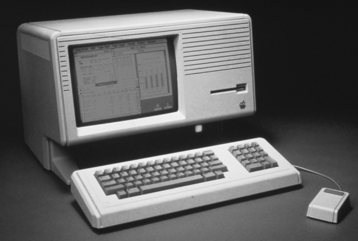

Welcome Lisa!
Lisa is a desktop computer developed by Apple, released on January 19, 1983. It is one of the first personal computers to present a graphical user interface (GUI) in a machine aimed at individual business users. Its development began in 1978. It underwent many changes before shipping at $9,995 with a five-megabyte hard drive. It was affected by its high price, insufficient software, unreliable Apple FileWare floppy disks, and the immediate release of the cheaper and faster Macintosh.
read more ->